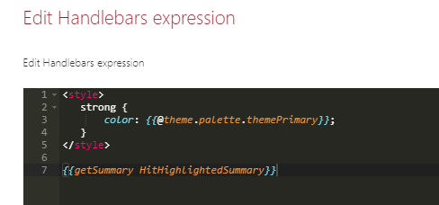
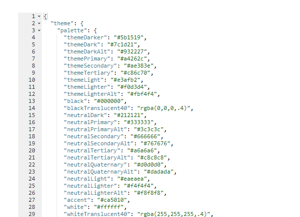

Customize layout templates with HTML, CSS and Handlebars¶
In a basic customization scenario, super users and webmasters can customize existing templates or start from a blank template to adapt the UI to their requirements. Templates use Handlebars to display data retrieved from the data source. There are several options to customize a template:
- Use regular HTML markup, Handlebars syntax and helpers.
- Use default web components provided by the solution.
- Write custom CSS styles.
- Use Microsoft Graph Toolkit components.
The templates and fields HTML markup is sanitized automatically preventing XSS attacks. We used
DOMPurifyto do so. It means for instance, you cannot add your own<script>tags or inline JavaScript.
Template structure¶
A layout template is always split into two distinct parts:
<content id="template">
<!-- Your template content here -->
</content>
<content id="placeholder">
<!-- Your placeholder content here -->
</content>
-
A
templatepart, containing the HTML markup to display your data once fetched. This part is mandatory to display your data. -
A
placeholderpart, containing the HTML markup to display as placeholder while the data are getting fetched. This part is optional.
Both can use Handlebars and web components (Microsoft Graph Toolkit included).
Handlebars helpers¶
The following custom helpers are available in addition to the handlebars-helpers. If those don't do the job for you, you can still write your own using the extensibility library.
The
markdownandlogginghelpers are not available. Fortimesusemultiplyastimesis a custom iterator.
| Helper | Description | Example |
|---|---|---|
{{getGraphPreviewUrl "<absolute_URL>" |
Try to determine the preview URL based on an absolute URL using the unified Microsoft Graph URL syntax. For instance, https://contoso.sharepoint.com/sites/dev/Shared%20Documents/MyDocument.pdf becomes https://contoso.sharepoint.com/sites/dev/Shared%20Documents/?id=/sites/dev/Shared%20Documents/MyDocument.pdf&parent=/sites/dev/Shared%20Documents | {{getGraphPreviewUrl 'https://contoso.sharepoint.com/sites/dev/Shared%20Documents/MyDocument.pdf'}} |
{{getCountMessage <total items count> <?keywords>}} |
Display a friendly message displaying the result and the entered keywords. | {{getCountMessage 5 'contoso'}} will display '5 results for 'contoso'. |
{{getSummary "<value>"}} |
Use with SharePoint Search data source and the HitHighlightedSummary SharePoint search managed property. Returns the formatted value for rendering. | {{getSummary HitHighlightedSummary}} |
{{getTagName "<value>"}} |
Use with tag fields. Returns the name of the tag, omitting the ID in the tag string (L0\|#000000000-0000-0000-0000-000000000000\|…). |
{{getTagName Tag}} |
{{getDate <data_value> "<format>" <time handling>}} |
Format the date with Moment.js according to the current language. Date in the managed property should be on the form 2018-09-10T06:29:25.0000000Z for the function to work.<time handling> is optional and takes
|
{{getDate 2018-09-10T06:29:25.0000000Z 'LL'}} |
{{getUrlField <managed_propertyOWSURLH> "URL|Title"}} |
Use with SharePoint Search data source. Returns the URL or Title part of a URL autocreated managed property | {{getUrlField MyPropertyOWSURLH "Title"}} |
{{getUniqueCount items "<property>"}} or {{getUniqueCount array}} |
Get the unique count of a property over the result set (or another array) or get the unique count of objects in an array. Example: [1,1,1,2,2,4] would return 3. |
{{getUniqueCount [1,1,1,2,2,4]}} |
{{getUnique items "<property>"}} |
Return the unique values as a new array based on an array or property of an object in the array. | {{getUnique items "NewsCategory"}} |
{{#group items by="<property>"}} |
Group items by a specific results property. See https://github.com/shannonmoeller/handlebars-group-by for usage. | |
{{slot item <property_name>}} |
Return the <property_name> value for the item object. Supports deep property paths. |
{{slot item "property.subproperty"}} |
{{getUserEmail <value>}} |
Extract the user email in a string based on a email regex (ex: a claim). Returns the first match. | {{getUserEmail "franck.cornu@contoso.onmicrosoft.com | Franck Cornu | 693A30232E667C6D656D626572736869707C6672616E636B2E636F726E7540616571756F736465762E6F6E6D6963726F736F66742E636F6D i:0#.f|membership|franck.cornu@contoso.onmicrosoft.com"}} |
{{#times <number>}} |
Iterate the block <number> times. |
{{#times 5}} some mark up {{/times}} |
{{regex <expression> <string>}} |
Run a regular expression and return the match. Return - if not match. |
{{regex '\d+' 'digit 15 is a number'}} will return 15. |
{{getPageContext "<SPFx page property>"}} |
Retrieve a property from the SPFx context object. | {{getPageContext "user.displayName"}} or {{getPageContext "cultureInfo.currentUICultureName"}} |
{{getAttachments}} |
Return object structure for list item attachments. | {{#getAttachments LinkOfficeChild}}<a href="{{url}}">{{index}} - {{fileName}}</href>{{/getAttachments}} |
Need any other helper? Let us know here!
Using builtin web components¶
By default, several components are available (see the complete list). If these does not fit your requirement, you can still create your own using the extensibility library.
Custom CSS styles¶
Inside an HTML template (or layout field), you can write your own CSS styles using a <style> tag. Even better, you can inject Handlebars variables, helpers, conditional blocks, etc. right inside it and get dynamic classes or attributes
<content id="data-content">
<style>
.example-themePrimary a {
color: {{@root.theme.palette.themePrimary}};
}
...
</style>
<div class="template">
...
...
However, all CSS rules (including @media rules) will be all prefixed automatically by an unique ID (pnp-template_<Web Part instance ID>) to make sure styles are isolated from other Web Parts on the page. We do this to avoid conflicts between classes in the global context.
Hide error message using CSS¶
By default the web parts will output an error message if something goes wrong on for example API calls.
If you want to hide the error message you can add the following CSS in your custom template.
<content id="data-content">
<style>
.pnpSearchResultsErrorMessage { display:none; }
...
</style>
<div class="template">
...
...
Use SharePoint theme in your templates¶
If you need to use current site theme colors, fonts and so on you can use the theme property available in the @root Handlebars context like this:
<content id="data-content">
<style>
.example-themePrimary {
color: {{@root.theme.palette.themePrimary}};
}
...
</styles>
...
<span class="example-themePrimary">{{Title}}</span>
...
</content>
You can also use this variable in the 'Details List' and 'Cards' layouts in field expresions.

A good way to see all available values for the current theme is to switch to the debug layout and inspect these values:

Work with placeholders¶
To indicate the data are loading, you can create placeholders (shimmers) using the <content id="placeholder-content"> section of your HTML template:
The placeholder is only loaded during first data load. For subsequent requests, a overlay will be displayed.
<content id="placeholder-content">
<style>
.placeholder .icon {
width: 20px;
height: 16px;
margin-right: 5px;
}
.placeholder ul {
list-style: none;
}
.placeholder ul li {
display: flex;
align-items: center;
padding: 8px;
}
</style>
<div class="placeholder">
<ul>
{{#times 5}}
<li>
<div class="icon placeholder--shimmer"></div>
<span class="placeholder--shimmer placeholder--line" style="width: 60%"></span>
</li>
{{/times}}
</ul>
</div>
</content>
Use CSS classes placeholder--shimmer and placeholder--line to build your placeholders. Basically, you can reuse the same HTML structure as your template content markup, but using these these classes instead to fill areas.
If no placeholder is present in the template, a default one will be loaded.
Microsoft Graph Toolkit¶
The Microsoft Graph Toolkit is a collection of reusable, framework-agnostic web components and helpers for accessing and working with Microsoft Graph. The components are fully functional right of out of the box, with built in providers that authenticate with and fetch data from Microsoft Graph.
In the solution, you can use Graph Tookit components whitout the need to re-authenticate against Microsoft Graph because the Web Parts already use the SharePoint provider.
Refer to the official documentation to see all available components. For instance, we use the Microsoft Graph Toolkit for the people layout via <mgt-person>.
Build templates with item selection¶
If your template requires items selection for dynamic filtering, you can follow these guidelines to design your template structure. The item selection feature is based on the Office Fluent UI Selection component and custom data attributes.
The available data attributes you can use in your HTML template are:
-
data-selection-index: the index of the item being represented. This would go on the root of the tile/row. -
data-selection-toggle: this boolean flag would be set on the element which should handle toggles.This could be a checkbox or a div. -
data-selection-toggle-all: this boolean flag indicates that clicking it should toggle all selection. -
data-selection-disabled: allows a branch of the DOM to be marked to ignore input events that alter selections. -
data-selection-select: allows a branch of the DOM to ensure that the current item is selected upon interaction.
As item key you must use the builtin Handlebars {{@index}} property in the {{#each}} loop. Also because state managed is internaly managed by the Web Part, we provide you an Handlebars helper isItemSelected to help to apply styles depending of the selection (ex: apply a CSS class or not). To use this helper correctly, you must pass the current selected keys and current index to get the selected state for an item:
(isItemSelected @root.selectedKeys @index)
Template example with item selection
<style>
.selected {
background-color: {{@root.theme.palette.themeLighter}};
border: 1px solid {{@root.theme.palette.themePrimary}};
color: {{@root.theme.palette.themePrimary}};
}
...
</style>
...
{{#each data.items as |item|}}
<div class="{{#if (isItemSelected @root.selectedKeys @index)}}selected{{/if}}" data-is-focusable data-selection-index="{{@index}}" data-selection-toggle>
<span>{{slot item @root.slots.Title}}</span>
</div>
{{/each}}
Note
- If you allowed multi items selection, you must use
CTRL+Left clickto select multiple elements. You can also select a range of elements usingSHIFT+Left click.